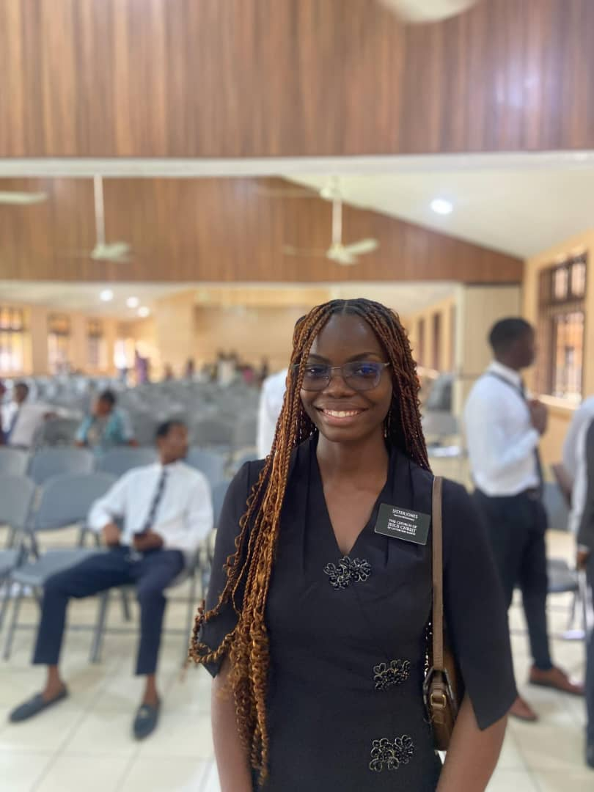
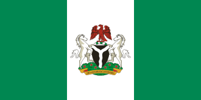

About Me
My name is Tarilate and I go by Tari. I was born in Port Harcourt, Nigeria, and live with my family in Yenagoa, Nigeria. I love playing the piano in my free time, I also love coding.
Nigeria

Nigeria, the "Giant of Africa," is West Africa's most populous country, known for its rich diversity with over 250 ethnic groups (Hausa, Yoruba, Igbo being largest) speaking 500+ languages, united by English and Pidgin. A major oil producer and burgeoning creative hub (Nollywood), it's a federal republic with capital Abuja and economic powerhouse Lagos, boasting diverse geography, climates, and a vibrant culture blending large Muslim and Christian populations with indigenous beliefs